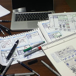

Tool Feedback Trainings
 Starting with a community-based needs assessment, USABLE matches at-risk populations with professional digital security trainers, a developer representing a tool appropriate for the community's needs, and a usability expert.
Each "TFT" will combine human-centered design work, traditional digital security training, and a focus on the mutually-agreed-upon security, privacy, or circumvention tool
These are meant to build community, communication, trust, skills, and provide insight for all participants.
Each community will build a user persona that represents their needs and barriers.